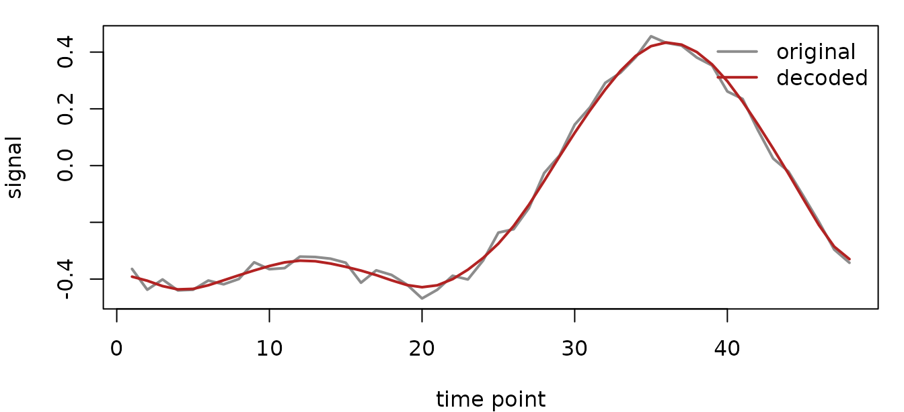

You have a BOLD matrix and want a compact payload that can be
decoded, audited, and compared with simple baselines. BOLDZip-SR is for
that matrix-level problem: rows are voxels or grayordinates, columns are
time points, and the result is a standalone codec payload rather than a
LatentNeuroVec.
The payload stores a voxel baseline, a small set of temporal carrier signals, sparse texture loadings onto those carriers, and optional sparse events for reliable deviations. At the end you should have a decoded matrix, fidelity diagnostics, and a scalar-count summary of what was stored.
What do you start with?
For this vignette, use a small simulated voxel-by-time matrix with low-rank carrier structure. The same workflow applies to a masked BOLD run after you have arranged it as voxels by time.
sim <- boldzip_sr_simulate(
n_voxels = 60L, n_time = 48L,
k_carriers = 2L, q_texture = 1L,
n_events = 0L, noise_sd = 0.02,
seed = 511
)
X <- sim$X
dim(X)
#> [1] 60 48How do you make a first payload?
Choose the number of carrier time courses, the temporal basis budget, and the number of texture links to keep for each detail atom. Here the temporal basis is a shared DCT descriptor, so the payload records the basis contract instead of asking you to manage a raw matrix by hand.
temporal <- shared_temporal_spec("dct", n_time = ncol(X), rank = 18L)
fit <- boldzip_sr_encode(
X,
k_carriers = 2L,
temporal_spec = temporal,
q_texture = 1L,
reliability = boldzip_reliability(min_texture_reliability = 0),
events = boldzip_events(max_events = 0L)
)Use evaluate_boldzip_sr() to inspect the reconstruction
error and the approximate payload size. It returns a named vector; the
compression ratio is just the original matrix scalar count divided by
the payload scalar count.
metrics <- evaluate_boldzip_sr(X, fit)
metrics[c("rmse", "correlation", "payload_scalars")]
#> rmse correlation payload_scalars
#> 0.0199820 0.9991927 1264.0000000
# Compression ratio: original scalars / stored scalars
length(X) / metrics[["payload_scalars"]]
#> [1] 2.278481The later sections compare several fits at once, so we fold those
same numbers into one tidy row per setting with a small helper
(boldzip_metric_row(), defined in the setup chunk) that
wraps the call above.
boldzip_metric_row("guide", X, fit)
#> setting rmse correlation payload_scalars compression_ratio
#> 1 guide 0.02 0.9992 1264 2.28The first fit tracks the observed time course closely for a representative voxel because the simulated signal matches the carrier-plus-texture structure.

Where did the payload budget go?
boldzip_sr_payload_summary() reports how many scalar
values are stored in each payload component. Treat it as an accounting
diagnostic, not as a compressed file-size estimate.
payload <- boldzip_sr_payload_summary(fit)
payload[, c("component", "scalar_count", "bytes")]
#> component scalar_count bytes
#> 1 carriers_theta 36 504
#> 2 texture_loadings 304 2920
#> 3 events 0 1352
#> 4 baseline_mu 60 528
#> 5 basis_metadata 864 8024
#> 6 total_object 1264 26648How do you decode only what you need?
The direct BOLDZip decoder returns voxels by time. You can request a small time window and a subset of rows without inspecting the payload internals.
window <- boldzip_sr_decode(fit, time_idx = 1:6, roi = 1:4)
round(window, 3)
#> [,1] [,2] [,3] [,4] [,5] [,6]
#> [1,] 0.171 0.179 0.187 0.187 0.175 0.155
#> [2,] 1.206 1.211 1.216 1.216 1.208 1.195
#> [3,] -0.788 -0.786 -0.783 -0.781 -0.781 -0.783
#> [4,] -0.107 -0.109 -0.111 -0.112 -0.112 -0.110BOLDZip-SR can also participate in the package’s implicit decoder
contract. The codec orientation remains voxels by time, while
ImplicitLatent prediction uses the package-wide
time-by-voxel convention.
latent <- as_implicit_latent(fit)
direct <- predict(fit, time_idx = 1:6)
implicit <- predict(latent, time_idx = 1:6)
data.frame(
decoder = c("BOLDZipSR", "ImplicitLatent"),
orientation = c("voxels x time", "time x voxels"),
rows = c(nrow(direct), nrow(implicit)),
columns = c(ncol(direct), ncol(implicit))
)
#> decoder orientation rows columns
#> 1 BOLDZipSR voxels x time 60 6
#> 2 ImplicitLatent time x voxels 6 60How should you tune the budget?
Start with carrier count, temporal rank, and texture sparsity. A smaller payload is cheaper to store, while a larger payload can reduce reconstruction error when the signal has structure to capture.
The temporal_k argument used below is the shorthand for
a DCT temporal spec of that rank — equivalent to passing
temporal_spec = shared_temporal_spec("dct", n_time = ncol(X), rank = temporal_k)
as in the first fit.
small <- boldzip_sr_encode(
X, k_carriers = 1L, temporal_k = 10L, q_texture = 1L,
reliability = boldzip_reliability(min_texture_reliability = 0),
events = boldzip_events(max_events = 0L)
)
larger <- boldzip_sr_encode(
X, k_carriers = 2L, temporal_k = 24L, q_texture = 2L,
reliability = boldzip_reliability(min_texture_reliability = 0),
events = boldzip_events(max_events = 0L)
)
rbind(
boldzip_metric_row("small", X, small),
boldzip_metric_row("guide", X, fit),
boldzip_metric_row("larger", X, larger)
)
#> setting rmse correlation payload_scalars compression_ratio
#> 1 small 0.0869 0.9846 852 3.38
#> 2 guide 0.0200 0.9992 1264 2.28
#> 3 larger 0.0196 0.9992 1864 1.55compare_boldzip_sr() gives a quick baseline table. Use
it to check whether the BOLDZip payload is buying the trade-off you want
for a given dataset.
comparison <- compare_boldzip_sr(X, fit, svd_ranks = c(2L, 6L))
comparison[, c("method", "parameter", "rmse", "correlation", "payload_scalars")]
#> method parameter rmse correlation payload_scalars
#> 1 boldzip_sr <NA> 0.01998200 0.9991927 1264
#> 2 svd 2 0.01888248 0.9992791 278
#> 3 svd 6 0.01628421 0.9994639 714When do events help?
If the data contain sparse paired deviations, allow an event budget. The table below uses a second simulated matrix with injected events and compares the same carrier/texture settings with and without event storage.
event_sim <- boldzip_sr_simulate(
n_voxels = 50L, n_time = 40L,
k_carriers = 2L, q_texture = 1L,
n_events = 5L, noise_sd = 0.01,
seed = 512
)
event_X <- event_sim$X
no_events <- boldzip_sr_encode(
event_X, k_carriers = 2L, temporal_k = 16L, q_texture = 1L,
reliability = boldzip_reliability(min_texture_reliability = 0),
events = boldzip_events(max_events = 0L)
)
with_events <- boldzip_sr_encode(
event_X, k_carriers = 2L, temporal_k = 16L, q_texture = 1L,
reliability = boldzip_reliability(min_texture_reliability = 0),
events = boldzip_events(max_events = 10L, threshold_sd = 2.5)
)
rbind(
boldzip_metric_row("no events", event_X, no_events),
boldzip_metric_row("with events", event_X, with_events)
)
#> setting rmse correlation payload_scalars compression_ratio
#> 1 no events 0.0605 0.9946 976 2.05
#> 2 with events 0.0229 0.9992 1026 1.95Where does this fit in fmrilatent?
BOLDZip-SR is a standalone matrix codec. Use
boldzip_sr_encode() when you want the carrier/texture/event
payload directly. Use encode() and the
spec_*() families when you want a standard latent
neuroimaging representation such as LatentNeuroVec.
For lower-level shared structure contracts, see
vignette("shared-structure-boldzip"). For the broader
distinction between regular latent encoders and standalone codecs, see
vignette("standalone-codecs").